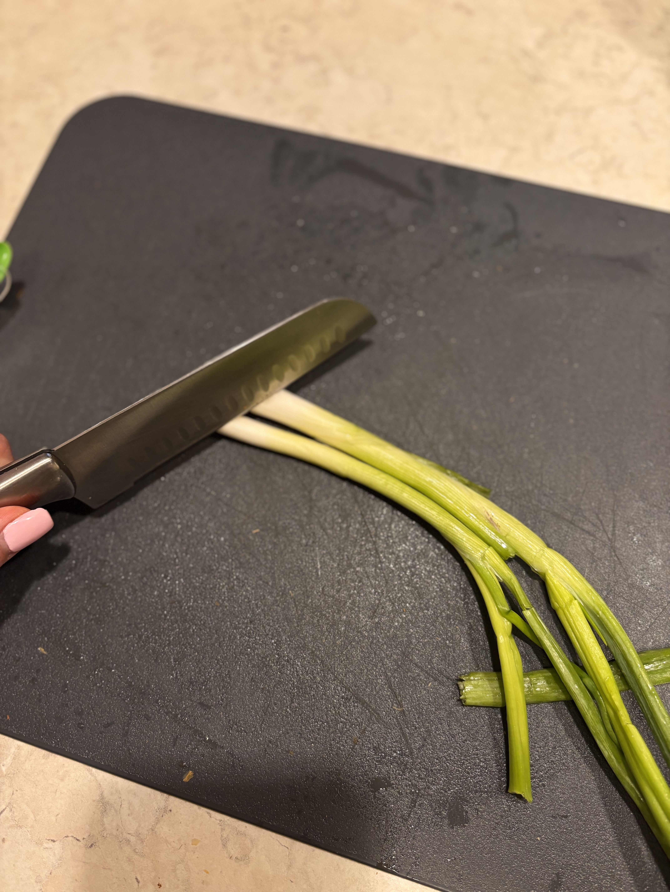
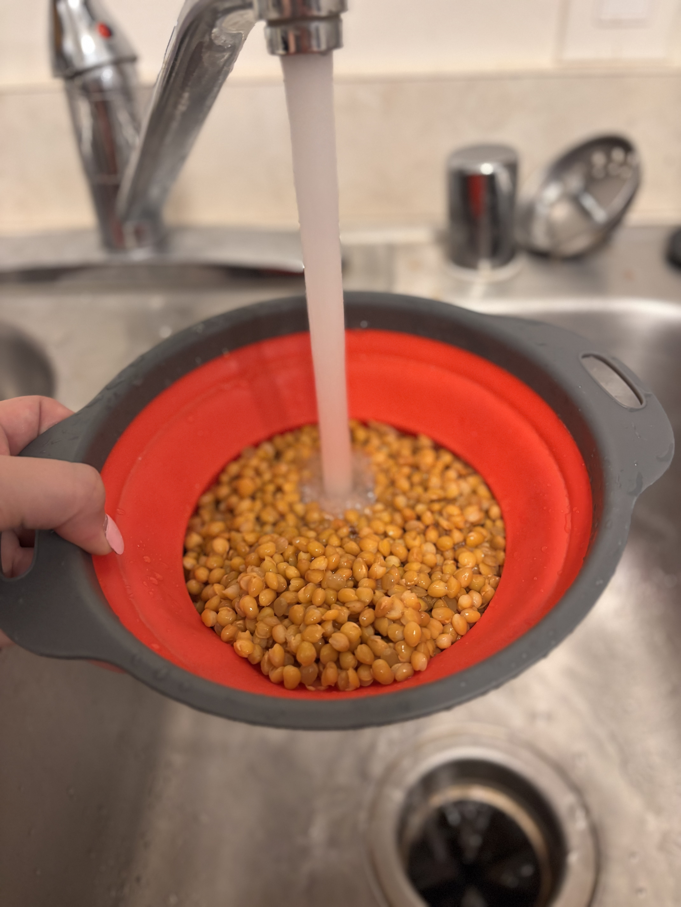
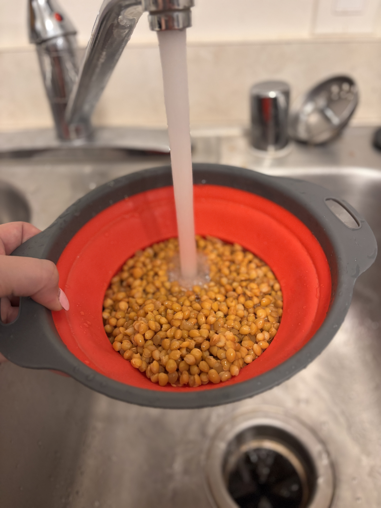
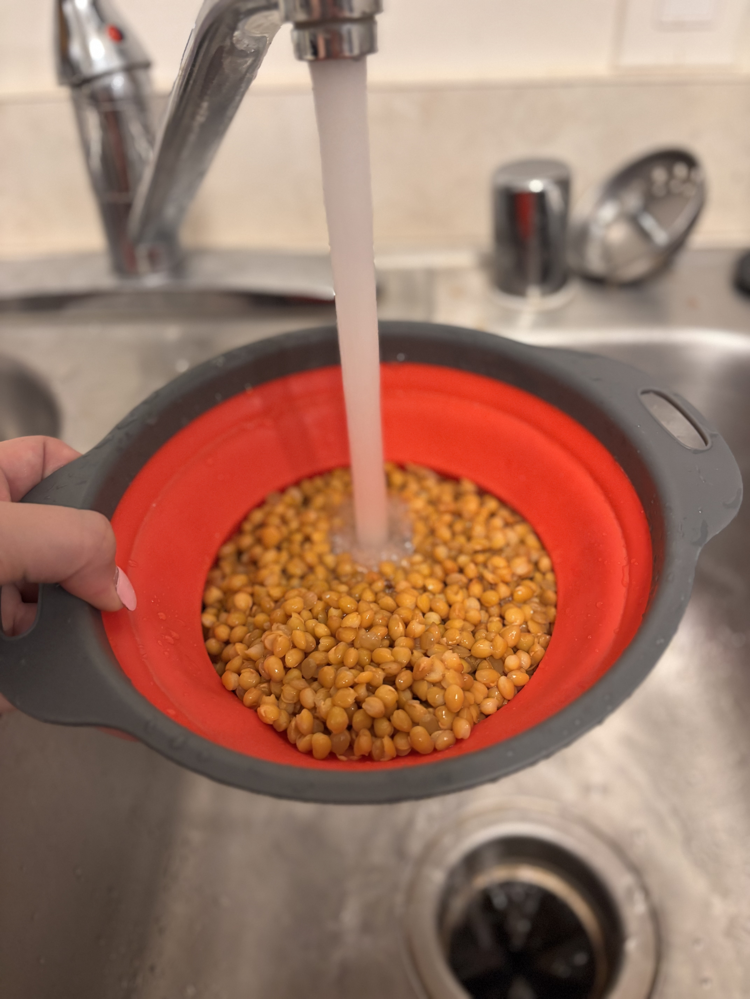
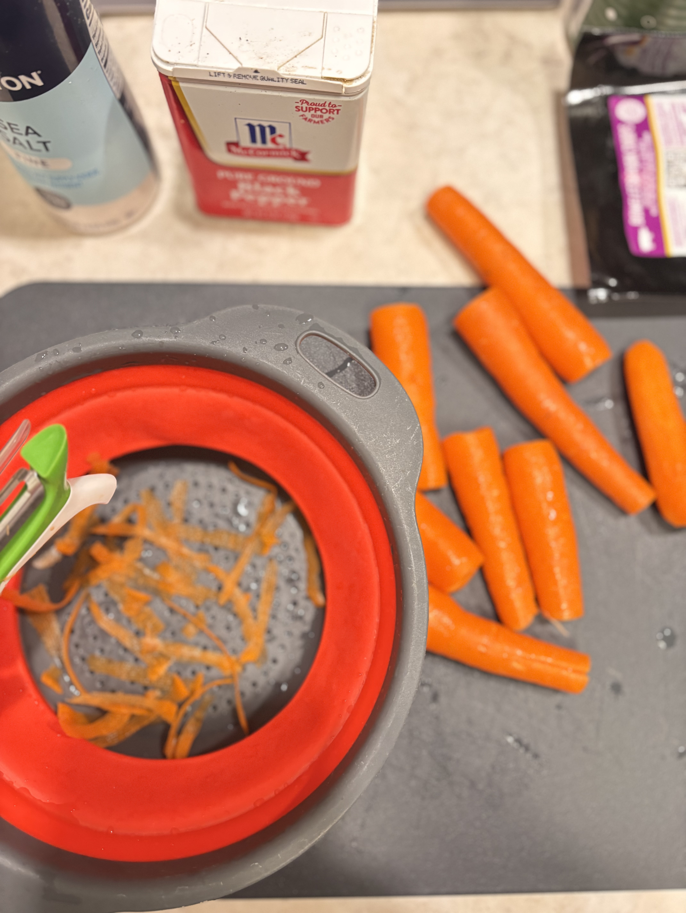
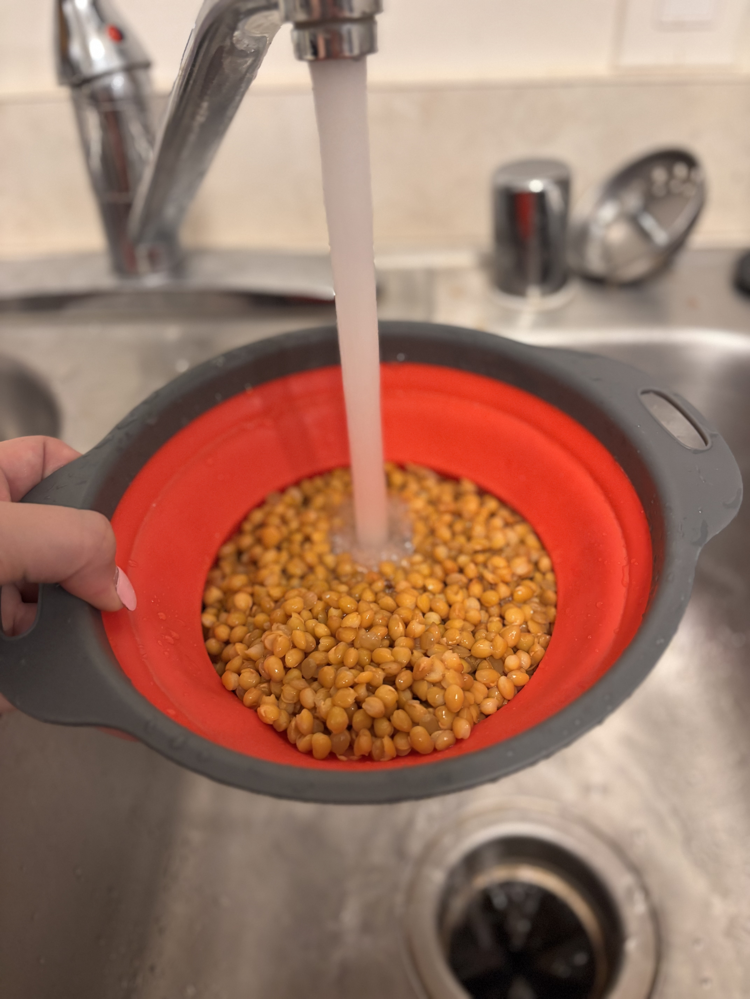
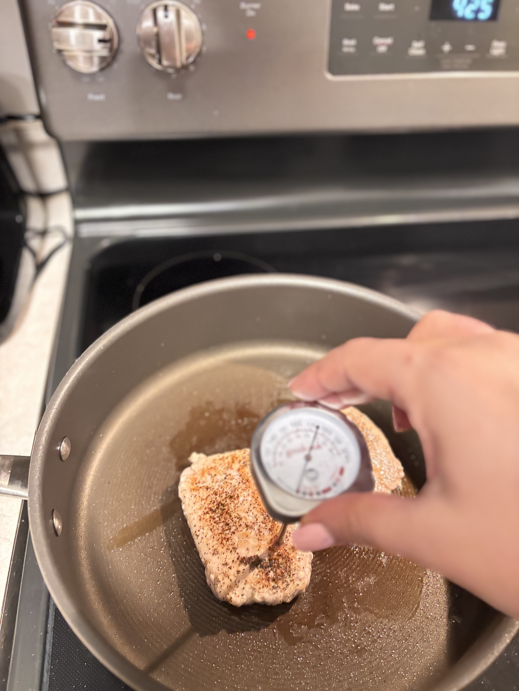
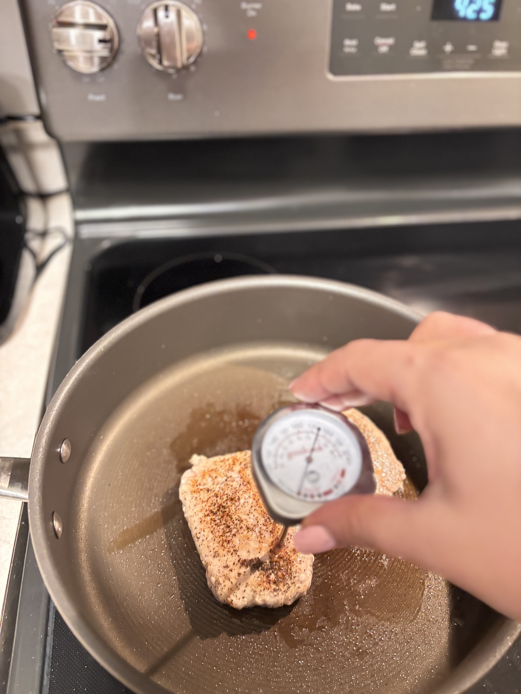
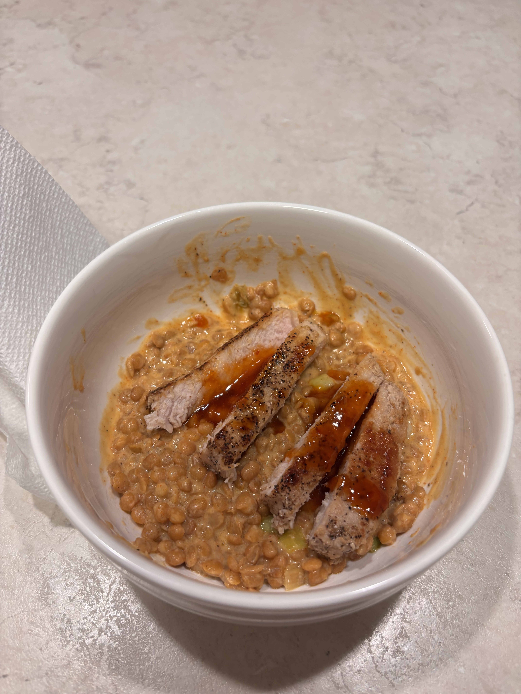

Step 3:
Prepare your scallions & lentils. Trim & thinly slice your scallions, keeping both the greens and whites in separate piles. Drain and rinse your lentils as well.

 


Preheat your oven & wash/dry ALL produce. Preheat oven to 425 degrees, and wash and dry produce.
Prepare your carrots. Trim, peel, and cut your carrots diagonally into 1/2" thick pieces. Then, toss your carrots onto your baking sheet with a drizzle of oil, salt, and pepper. Roast them on the top rack until tender & brown, roughly 20-25 minutes.
Prepare your scallions & lentils. Trim & thinly slice your scallions, keeping both the greens and whites in separate piles. Drain and rinse your lentils as well.

Combine in a pot. Heat a drizzle of oil in a small pot over medium-high heat. Add your scallion whites, stirring until fragrant (~30 seconds). Then, add your lentils, stock concentrate, red pepper crema, chili powder, and 2 tablespoons of water. Stir until combined. Bring to a simmer, then reduce your heat to low, cooking & stirring occasionally until heated through (~6-8 minutes).

Add in your crème fraîche and butter. Stir in your crème fraîche and 1 tablespoon of butter into your pot with lentils. Taste & season with salt and pepper if desired.

Prepare & cook your pork. Pat your pork dry with paper towels and season entirely with salt and pepper. Heat a drizzle of oil in a large pan over medium-high heat. Add your 10 oz of pork and cook until browned and cooked through (~3-4 minutes per side). Turn off heat when complete, transfer pork to a plate, and wipe out the pan.
 

Create your sauce. Heat the pan used for the pork over medium heat. Add 1/4 cup water, jam, and 1 tablespoon of butter. Cook & stir until the butter has melted and the sauce thickens (~1-2 minutes).
Slice your pork. Thinly slice your pork crosswise.
Plate your meal! Divide pork, creamed lentils, and carrots between plates into separate sections. Spoon your pepper jam sauce over the top and sprinkle with scallion greens!
Enjoy!